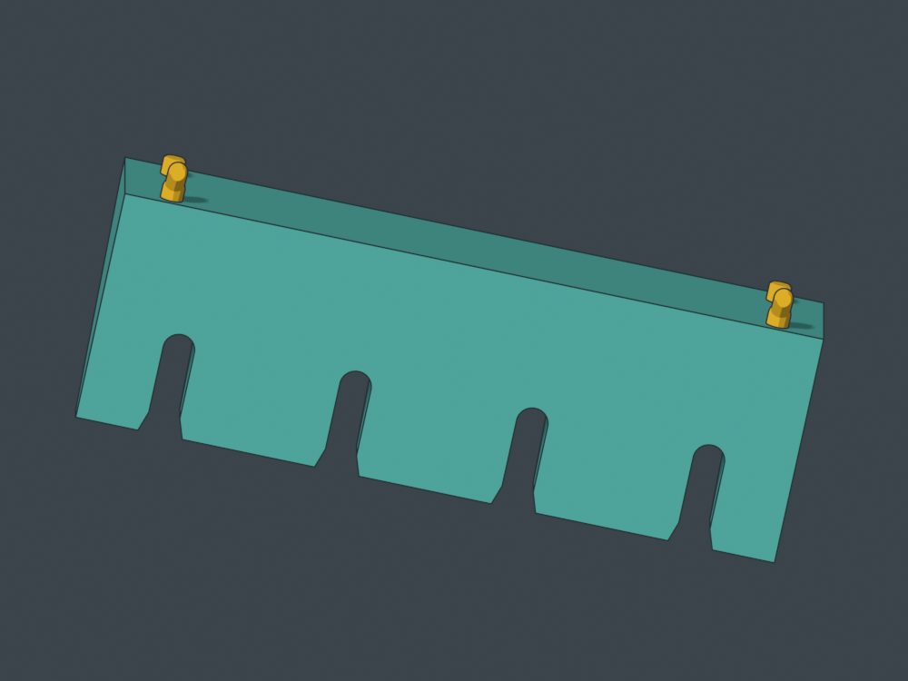
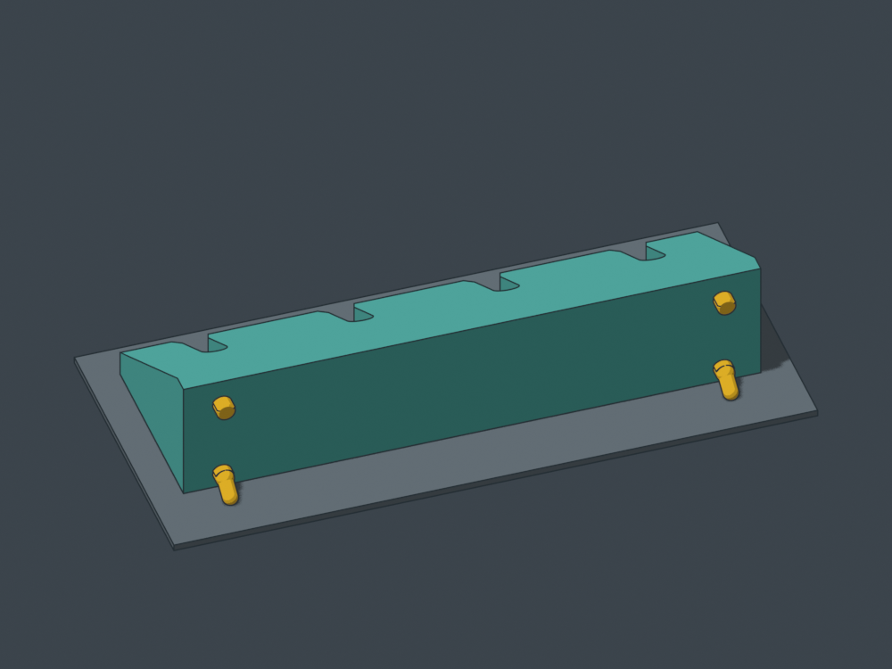
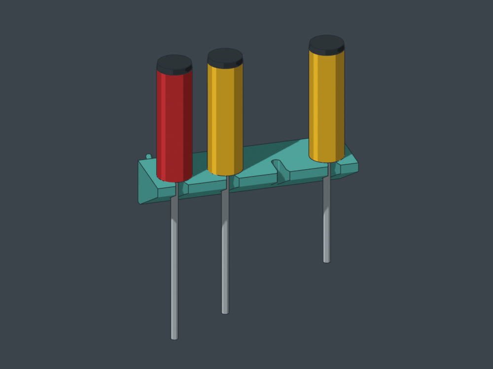
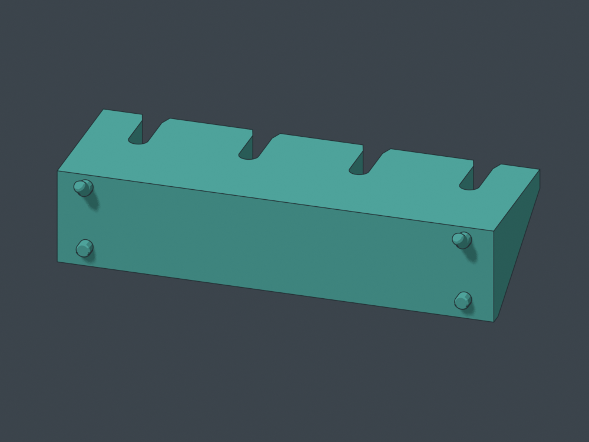

D v2: three contacts on the bed.
One standard four-driver rack, seven cells wide: 175.8 mm. Flat handle-bearing surface, open shaft slots, and braces that narrow as the inverted print grows. Each hook has a 0.8 mm cap removed; both resulting flats share the holder’s top plane.
Form review: main body passes the surface-angle screen. Hook flats add bed contact; local peg supports remain part of the intended workflow. Not sliced or test-printed. These flat open seats still allow backward handle rocking and forward shaft escape. D is an orientation comparison, not a replacement for magnetic C.
 Flat working top. Four open shaft slots; no recessed seats.
Flat working top. Four open shaft slots; no recessed seats.
Looking from beneath the bed: both 10.3 mm2 hook flats are coplanar with the broad top. Flat width 3.58 mm; cap removal 0.8 mm.
Upside down on the broad top. Yellow: flat-ended hooks and lower locators. Hook flats meet the bed; local supports are still allowed.
Three nominal tools shown, one empty seat. Tool shapes are planning envelopes.
Two tighter hooks with 0.8 mm tip flats and two lower locators; flush receiving back.Download
Rotate the installed CAD
Rotate the upside-down print pose
9,354 mm² flat top contact; 8 mm front bearing thickness; 44.45 mm tool centers. Nominal 30 mm flat-ended handles and 6.35 mm shafts. A 1 mm lift followed by forward travel clears the modeled neighbors; actual tool shoulders remain to be tested.